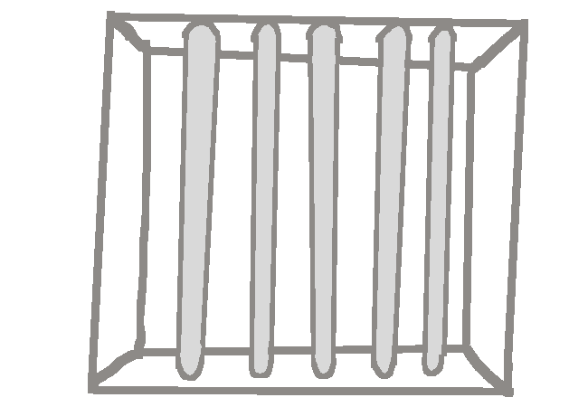

Despite seeming like a window, with bars and everything, actually looking
through this "Window" reveals that it is merly a slightly indented section
of the wall. You wonder what could have caused this situation to occur.
maybe it was just a mistake by a particulaty inept architect,
or some kind of psychological torture method used on those trapped here.
You really hope it's the architect thing.
>
Tilly: Open Door